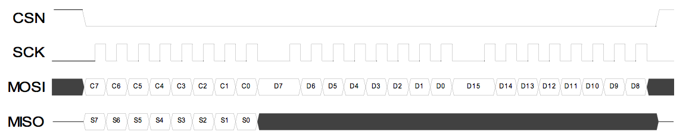

Antenas de radio frecuencia nFR24L01
Para realizar la transferencia de datos entre el dron y el control, utilizamos las antenas de Radio Frecuencia nFR24L01 debido a que esta, puede alcanzar una mayor distáncia y además transmitir (enviar y recibir) información a una mayor velicidad, es decir, la comunicación se vuelve más eficiente.
Características
Ultra low power consumption
- 900nA deep sleep mode
- 11.3mA Radio TX at 0dBm
- 12.3mA Radio RX at 2Mbps on-air data-rate
2.4GHz Radio
- 2.4GHz ISM band operation
- GFSK modulation, 1 or 2MHz bandwidth
- 0, -6, -12, and -18dBm programmable TX output power
- Configurable on-air data rate of 1Mbps or 2Mbps
- -82dBm RX sensitivity at 2Mbps
- -85dBm RX sensitivity at 1Mbps
- Compatible with a 16MHz ±60ppm crystal
Enhanced ShockBurst™ hardware protocol accelerator
- Automatic packet assembly (Preamble, Address, CRC)
- Automatic packed detection and validation
- Dynamic payload length, 1 to 32Bytes
- Auto retransmit
- Auto Acknowledgment with optional payload
- 6 data pipe MultiCeiver™
- 3 separate 32Byte TX and RX FIFOs
MCU Interface
- SPI, up to 10Mbps
Power supply
- Internal linear voltage regulator
- 1.9 to 3.6V supply range
Package options
- 20-pin 4 x 4mm QFN
En la tabla seguiente, se presentan las entradas y salidas del módulo.
| Entradas y salidas digitales | ||
| CE | Entrada | Chip enable permite activar el modo de lectura o escritura |
| CSN | Entrada | SPI chip select |
| SCK | Entrada | SPI clock |
| MOSI | Entrada | Entrada de datos SPI del modulo |
| MISO | Salida | Salia de datos SPI del modulo |
| IRQ | Salida | Pin de interrupcion que puede ser denegado por el microprocesador este se activa como una señal baja |
| Pines de alimentacion | ||
| VCC | Descripcion | |
| GND | Descripcion | |
Diagrama de bloques
El diagrama de bloques muestra la arquitectura general del sistema de las antenas RF.

Diagrama de estados
Para entender mejor, como trabajar con las antenas, el fabricante nos mostra el diagrama de funcionamento (diagrama de estados)
Los principales estados (modo recomendado), son "Power Down Mode","Standby Modes","RX mode"y"TX mode"
Diagramas de flujo
Transmisión (PTX operation)
Este diagrama muestra como es el flujo de información, para realizar la tranferencia de datos, que son enviados a otro módulo RF (a otra dirección)
Recepción (PRX operation)
Este diagrama muestra el proceso de lectura de datos recibidos por otro módulo RF
Para la transmisión y recepción hay 7 "canales", es decir, identificadas por direcciones diferentes, la dirección 0, es recomendada utilizarse unicamente como la dirección para recibir información, de esta forma, es posible enviar datos a 6 módulos distinto, sin que la información entre en conflicto.
Para enviar información a través de las antenas, es necesário, utilizar el protocolo SPI, para escribir, se necesita activar, poniendo el CSN en el estado bajo<. El diagrama abajo, muestra la operación de escritura
Para escribir tambien se necesita activar el CSN en el estado bajo<. El diagrama abajo, muestra la operación de lectura